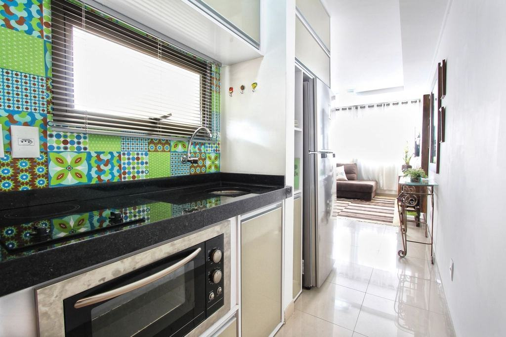

Säkrare trappor, mindre spill
Var tredje fallolycka i hemmet sker i en trappa. Vi föreslår alltid halkskydd och kontrollerar att ledstången sitter fast. Stegen tillverkas ur hela plank med optimerad kapning, och spillet blir tändved som vi skänker till scoutkåren i Sunnersta.
- 100 %av trapporna får halkskydd som tillval
- 5 årgaranti på inklädda trappor
- 12 %spill i verkstaden – ned från 20
Trappor från källare till vindsvåning
- Pågående

Spiraltrappa i Luthagen
19 olika breda steg slipade för hand och lackade med halkhämmande lack.
- Klar

Brf Kvarngärdet
312 steg i sex trapphus bytta till gummisteg med kontrastnos.
- Klar

Villa i Kåbo
46 svarvade spjälor kopierade och trappan slipad och oljad.
- Klar

Radhus i Sunnersta
Furutrappa från 1978 klädd med massiv ek och golvet i hallen slipat.
- Klar

Villa i Alsike
Källartrappa i betong klädd med asksteg och ny ledstång.
- Pågående

Brf Rosendal Terrass
Fyra trapphus får nya linoleumsteg under hösten.
Vilken trappa gäller det?
Vi renoverar trätrappor i villor och lägger nya trappsteg i trapphus – och lägger golvet runt omkring när det behövs.
- 01
Trapprenovering
Slipning, lagning och ny ytbehandling av trätrappor med 12–18 steg.
- 02
Inklädnad av trappor
Furu- eller betongtrappor kläds med massiva steg i ek eller ask.
- 03
Nya trappsteg
Steg och sättsteg tillverkade efter mall i vår verkstad.
- 04
Trapphus i brf
Linoleum- och gummisteg med halkskydd och kontrastmarkering.
- 05
Ledstänger och räcken
Ledstänger i trä, ståltrådsräcken och spjälor som uppfyller dagens krav.
- 06
Halkskydd
Infrästa spår, halkskyddslister eller halkhämmande lack.
- 07
Golvet runt trappan
Slipning eller ny parkett i hallen så att trappa och golv matchar.
- 08
Fast pris per trappa
Tre paket med fast pris – ROT-avdraget uträknat.
Specialister på det som binder ihop våningarna
Stegman startades 2009 av Tomas Stegman, golvläggare som insåg att ingen i Uppsala ville ta trapporna. Slipmaskinerna passar inte, varje steg är olika och det tar tid. Det gjorde trappor till ett eget yrke. Första året renoverade han 70 trappor i villor i Sunnersta och Gottsunda.
Föreningar och förvaltare
6 uppdragsgivare i urval- Brf Kvarngärdet
- Brf Rosendal Terrass
- Brf Luthagsesplanaden
- Uppsala Studentbostäder
- Knivsta Fastighetsservice
- Fyrisvallens Fastigheter

”En trappa är fjorton små golv som alla är lite olika. Den som har bråttom ska inte renovera trappor.”
Skicka en bild på trappan och antal steg – vi svarar med ett preliminärt pris samma dag.

Bli trappspecialist
Du behöver vara golvläggare eller snickare och tycka om detaljer. Vi lär dig resten – trappor är ett hantverk man lär sig steg för steg.